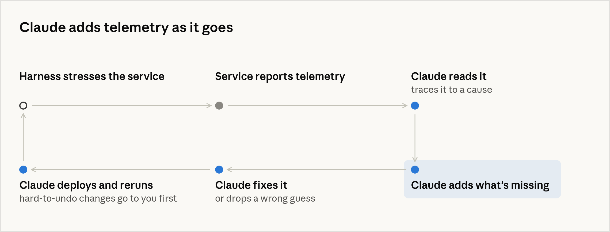

Claude Docs는 여러분과 팀원, 그리고 Claude가 함께 작업하는 문서 편집기입니다. 흥미로운 점은 채팅부터 Claude Code까지 어디에서든 Claude 세션이 같은 문서를 열어 여러분 바로 옆에서 실시간으로 읽고, 쓰고, 코멘트를 달 수 있다는 것입니다. 우리는 2026년 9월 16일에 Docs를 출시했습니다. 이 글은 그 밑에서 돌아가는 서비스에 관한 이야기입니다.
Claude Docs가 일반에 공개되기 3주 전, 이 서비스는 노드 하나에서 개념 증명(proof of concept)으로 돌아가며 Anthropic 내부의 수천 명이 쓰고 있었습니다. 우리는 야심 찬 출시일을 향해 달려가고 있었고, 자체 추정으로는 출시 후 첫 며칠 안에 문서가 수백만 개 생길 것으로 보였습니다.
우리는 9월 16일에 출시했습니다. 9월 22일까지 사람들이 만든 문서는 460만 개가 넘었습니다. 20억 건의 요청 동안 서버 오류는 60건뿐이었고, 롤백은 한 번도 하지 않았습니다. Docs 서비스 전체가 메모리 최적화 pod 약 50개 위에서 돌아갔습니다.
두 가지 결정이 이를 가능하게 했습니다.
하지만 솔직히 말하면, 이 방법이 통한 건 최근 우리 프런티어 모델이 훨씬 좋아졌기 때문입니다(저는 Claude Fable 5.2와 대략 비슷한 수준의 내부 연구용 모델을 썼습니다). 우리 경험상 이제 모델은 이런 실행에서 하나의 목표를 몇 주 동안 붙들고 갈 수 있고, 덕분에 빠듯한 일정 안에 출시 규모에 도달할 수 있었습니다.
머신 한 대에서 내부 사용자 수천 명이 쓰는 것만으로는 서비스가 출시를 버텨 낼지 전혀 알 수 없었고, 당연히 테스트에 쓸 출시 트래픽도 없었습니다.
우리는 얼마나 빨리 롤아웃할 수 있을지 판단할 실제 증거가 필요했습니다. 그래서 출시 약 2주 전인 9월 4일, 저는 Claude에게 프로덕션을 그대로 본뜬 스테이징 클러스터를 하루 100만 개가 넘는 합성(synthetic) 문서로 몰아붙이고, 핵심 구성 요소를 일부러 망가뜨리게 했습니다. 그리고… 그냥 계속 돌아가게 놔뒀습니다(전체 비용은 이 글 끝에 적어 두었습니다).
제 구성은 꽤 단순했습니다. 루프는 제가 켜 둔 Claude Code 세션 하나였습니다. 시나리오를 고르고, 하네스를 돌리고, 텔레메트리를 읽고, 수정안을 제안하고, 스테이징에 배포하고, 반복합니다. 그 세션은 코디네이터(coordinator) 역할을 하며 대부분의 일을 서브에이전트(sub-agent)에게 넘겼습니다. 가장 바쁜 주에는 보통 서브에이전트 약 11개가 동시에 돌았고, 최대일 때는 30개였습니다. 코디네이터는 Slack MCP를 통해 사내 버전의 Claude Tag(베타)와도 대화하며, 비슷한 서비스를 확장해 본 Anthropic의 다른 인프라 팀들로부터 배웠습니다. 그 팀들의 에이전트가 우리의 확장 방식을 검토해, 자기들이 이미 겪었던 함정이 없는지 확인해 줬습니다.
재미있었던 건 제가 생각하기에 지나치게 걱정스러운(paranoid) 시나리오를 고르는 일이었습니다.
매 반복은 똑같은 모양이었습니다. 테스트 하네스가 문서 생성 같은 기능 하나를 골라 생성 작업을 포화 상태까지 밀어붙입니다. 그러면 Claude가 Datadog MCP로 텔레메트리를 읽고, 짧은 선택지 목록과 추천안을 들고 돌아왔습니다.
추천안이 되돌리기 쉬운 것이면 Claude가 변경을 작성해 스테이징에 배포하고 테스트를 다시 돌렸습니다. 서비스가 실행하는 모든 작업에 텔레메트리가 붙어 있었습니다. 예를 들어 모든 데이터베이스 쿼리는 자기 이름과 함께, 스캔한 행 수 대비 반환한 행 수를 보고했기 때문에, Claude는 나쁜 쿼리를 찾아내 다시 작성할 수 있었습니다.
루프를 시작하기 전에 저는 어떤 결정에 제 승인이 필요한지 Claude에게 알려 두었습니다. 기본적으로 되돌리기 어려운 것 전부입니다. 데이터베이스 스키마나 키 레이아웃 변경, 또는 문서가 저장되고 구체화(materialize)되는 방식의 변경 같은 것들입니다.
Claude는 그런 결정에 부딪히면 멈추고 제게 물었는데, 보통 추천안을 함께 줬고 저는 결국 그 추천안을 승인했습니다. 스키마 변경은 제가 상의받고 싶었던 전형적인 경우였습니다. 합리적인 답이 보통 몇 가지 있고, 방향을 바꾸는 일은 대개 고통스럽기 때문입니다.
그리고 테스트 과정 내내 Claude는 두 가지 불변 조건(invariant)을 지켜야 했습니다.
제 동료 Felix Rieseberg가 최근 모델과 함께 더 야심 차게 일하는 법에 관한 튜토리얼을 썼습니다. 핵심 아이디어는 Claude에게 프롬프트를 주는 “고도(altitude)”를 높이라는 것입니다. 개별 작업이 아니라 원하는 결과를 요청하라는 거죠.
그래서 Claude에게 개별 크래시를 고쳐 달라고 하는 대신, 앱에서 크래시가 없게 만들어 달라고 요청합니다. (우리 앱들도 아직 완전히 거기까지 가지는 못했지만, 이 방식으로 실제로 진전을 이루고 있습니다.) 다만 그 고도에서 일하려면, Claude가 스스로 크래시 리포트를 가져오고 각 크래시를 재현해 수정을 확인하는 하네스를 돌릴 수 있도록 코드를 갖춰 둬야 합니다.
우리에게 그 결과란 출시를 감당할 수 있는 서비스였습니다. 거기에 도달하기 위해, 우리는 서비스를 Claude가 최대한 읽기 쉽게 만드는 두 가지 일을 했습니다.
매 반복마다 Claude는 텔레메트리를 읽고, 빠졌다고 생각하는 것은 무엇이든 추가했습니다. 텔레메트리를 손으로 작성하는 건 지루한 일이라, 실제로는 대부분의 텔레메트리가 무언가 망가진 뒤에야 들어가곤 했습니다. 이제는 Claude가 진행하면서 그냥 작성합니다.
메모리가 가장 좋은 예입니다.
하네스 실행 초기에, 큰 문서 하나가 자기 pod에서 약 3 GB를 쓰고 있었습니다(보고 싶은 숫자는 아니죠). Claude가 처음 시도한 수정은 캐시 하나의 크기를 줄여 서버가 문서를 더 일찍 축출(evict)하게 하는 것이었습니다. 다음 하네스 실행에서 메모리가 실제로는 우리 의존성 중 하나 안의 별도 캐시에 있다는 것이 드러났고, Claude는 그 변경을 철회했습니다.
거기서부터 Claude는 더 세밀한 메모리 프로파일링으로 범위를 계속 좁혀 나갔습니다. 결국 키 입력 하나하나가 문서를 여러 다른 자료 구조로 복사하고 있었고, 그때마다 몇 MB씩 더해지고 있다는 것을 찾아냈습니다. Claude는 그 구조들을 copy-on-write로 바꿨고, 이제 각자 사본을 들고 있는 대신 하나의 참조를 공유합니다.
약 3일간 반복한 끝에 그 문서는 약 180 MB에서 최고치를 찍었고, 출시에 필요하리라던 추정치는 메모리 최적화 pod 500개 이상에서 약 50개로 떨어졌습니다.

우리는 서비스의 런타임과 의존성을 까다롭게 골랐습니다. Claude가 측정한 어떤 숫자든 우리가 작성한 코드로 거슬러 올라가길 원했습니다.
우리 모델은 깨끗한 신호가 있을 때 가장 잘 언덕을 오르기(hill climb) 때문입니다. 가비지 컬렉터는 노이즈를 더할 거라고 예상했습니다. 메모리와 지연 시간이 컬렉터의 일정에 따라 움직이기 때문입니다.
가장 도움이 된 선택은 두 가지였습니다.
Rust는 사람이 작성하기 어려운 언어이고, 몇 년 전이었다면 그 점이 선택에 크게 작용했을 겁니다. Claude는 Rust와 대부분의 다른 언어를 문제없이 작성하므로, 이제는 그게 훨씬 덜 중요합니다.

서비스는 출시 규모를 버텨 냈습니다. 첫 100만 개의 문서가 약 30시간 만에 생겼고, 9월 22일에는 460만 개를 넘었습니다. 9월 한 달 동안 프로덕션을 629번 배포(roll)했고, 한 번도 롤백하지 않았습니다.
출시 주간은 이상하리만치 익숙하게 느껴졌습니다. Claude는 서비스가 실패할 수 있는 방식을 상상하는 데 아주 뛰어나서, 출시 한참 전에 그 대부분을 대비해 두었습니다. 스테이징에서 리허설한 시나리오 10개 중 7개가 실제로 프로덕션에서 일어났습니다. 그때쯤엔 하네스가 이미 스테이징을 그 대부분에 노출시켜 봤고, Claude는 수정 사항을 런타임 플래그 뒤에 배포해 둔 상태였습니다. 인프라 일부에 부담이 생기면 대개 플래그 하나만 뒤집으면 됐습니다.
몇 달 전이었다면 이 방법은 아마 통하지 않았을 겁니다. 예전 모델도 MCP 서버를 통해 텔레메트리를 읽는 건 괜찮았지만, 긴 루프에서 열 번, 스무 번쯤 반복하고 나면 우리가 무엇을 최적화하고 있었는지 잊기 시작했고, 결국 제가 목표를 다시 말해 줘야 했습니다. 다른 Anthropic 직원들은 이것을 목표 표류(goal drift)라고 불렀습니다.
우리의 새 프런티어 모델은 장시간 작업을 위해 만들어졌습니다. Claude는 수많은 컴팩션(compaction)을 거치면서도 우리의 불변 조건을 모두 유지했고, 저는 그것을 한 번도 반복해서 말할 필요가 없었습니다.
이런 일을 하는 건 우리만이 아닙니다. Vercel은 우리와 아주 비슷한, 감독받는 에이전트 루프로 Turborepo를 최대 96% 더 빠르게 만들었습니다.
Claude Fable 5.2의 API 정가(2026년 11월 기준)로 계산하면, 저는 8월 말부터 출시일까지 대략 125,000달러어치의 추론(inference)을 썼습니다. 몇 년 전이었다면 이 규모의 작업은 엔지니어 한 팀이 6개월쯤 걸렸을 거라고 생각합니다.
그 대부분은 텔레메트리 읽기, 제안 작성, 수정 생성, 코드 리뷰에 들어갔습니다.
비용에 관해 몇 가지 덧붙이면:
이 방법은 훨씬 작은 서비스에서도 통하고, 비용도 훨씬 적게 들 겁니다.
대략적인 숫자를 얻으려고, 저는 전형적인 소규모 팀 스택의 가격을 매겨 봤습니다. 적당한 크기의 Kubernetes 노드 두어 개와 Postgres 인스턴스 하나입니다. 그런 다음 8월 말부터 출시일까지 제가 반영한 변경 사항을 훑으며, 그런 구성에는 필요 없을 작업을 걷어 냈습니다.
변경 사항의 약 3분의 1이 남았습니다.
지출을 그 3분의 1로 줄이고, 구성을 아직 알아가던 중에 제가 저지른 실수를 빼고 나면, 이런 2주짜리 집중 작업은 같은 정가 기준으로 3,000~10,000달러 정도라고 봅니다(실제로 돌려 본 건 아니라서 대략적인 감일 뿐입니다).
아래 단계는 Claude Code를 쓰는 엔지니어 한 명, 스테이징 환경, 그리고 관측성(observability) 제공업체가 있다고 가정합니다. 코디네이터와 서브에이전트가 과정을 빠르게 하는 데 도움이 되었지만, 시간당 토큰을 너무 많이 태운다 싶으면 에이전트 하나로 돌아가도 꽤 잘 통할 겁니다. 시도해 보고 싶다면:
같은 3주 동안 편집기 수정 수천 건을 반영한 Docs 팀, 그리고 이 모든 것의 토대를 만든 플랫폼 팀과 스토리지 팀에 큰 감사를 전합니다.
더 읽을거리. How we made claude.ai 3x faster in two weeks (claude.dev) · A harness for every task: dynamic workflows in Claude Code (claude.dev), 목표 표류에 관한 글.